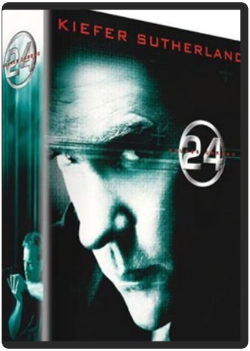

24 heures chrono, saison 1 24 heures chrono, saison 1  Jack Bauer, patron d’une cellule antiterroriste, est chargé de veiller à la sécurité d’un sénateur noir, candidat à la présidence des États-Unis. Mais lorsqu’il prend connaissance d’un complot visant à assassiner ce dernier, il sait que pour le déjouer il devra subir la plus longue journée de sa vie… Un thème et une histoire pas vraiment originaux, mais un concept révolutionnaire : l’intégralité de la série, qui se déroule en 24 heures (de minuit à minuit), tient sur 24 épisodes d’une heure… et l’on peut donc suivre l’action en temps réel. C’est quasiment à un documentaire caméra à l’épaule que l’on a l’impression d’assister. L’enquête qui se joue petit à petit sous nos yeux n’en devient que plus palpitante, grâce également à une utilisation ingénieuse des caméras (qui permettent de suivre l’action sous différents angles et points de vue). Kiefer Sutherland, dont la carrière cinématographique avait plutôt tendance à stagner, a eu une excellente intuition en acceptant le rôle de Jack Bauer, dans lequel il est réellement impressionnant. Lauréat d’un Golden Globe pour 24 heures chrono, il a d’ailleurs rempilé pour une seconde saison. En attendant de la découvrir, vous pouvez tenter l’exploit et vous passer les 24 premiers épisodes à la suite, en temps réel : vous passerez une journée unique, à n’en pas douter. —David Rault 24 heures chrono, saison 3 Jack Bauer est de retour pour la troisième journée la plus longue de sa vie. Difficile de parler de 24 sans gâcher un élément de surprise, alors que l’essence même de la série est d’offrir en moyenne un retournement de situation par épisode. Disons simplement qu’avec cette troisième saison, qui concilie la fluidité narrative et la dramaturgie humaine de la première saison et le spectaculaire, la noirceur et le politiquement incorrect de la deuxième, 24 arrive à maturité. Centrée sur une trame principale très efficace, la série n’hésite plus à se salir les mains. Génocide, euthanasie, exécutions sommaires… plus rien n’arrête les scénaristes, passés maîtres dans l’art de pousser le bouchon toujours plus loin.  24 heures chrono, saison 8 24 heures chrono, saison 8 Les pires menaces guettent les Etats-Unis. Chaque fois Jack Bauer ne dispose que de 24 heures pour empêcher la catastrophe... Un nouveau concept innovant, et un suspense quasi insoutenable. |


 Made with Delicious Library
Made with Delicious LibraryNancy, State zipflap congrotus delicious library Thomas, Julien